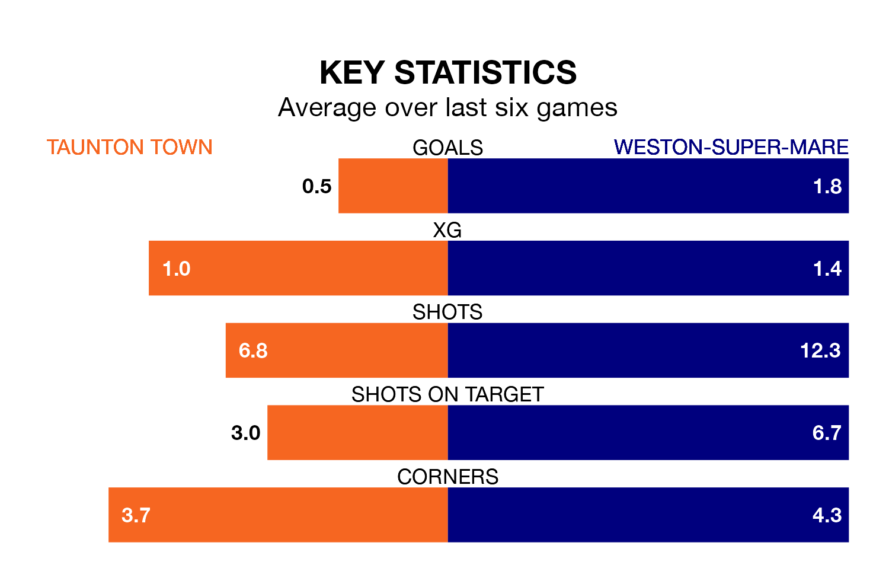

Weston-super-Mare travel to Taunton Town on late Thursday in the National League South.
The visitors come into the game on the back of a draw in their last match, having tied with Eastbourne Borough 1-1 at home.
Taunton, meanwhile, lost their last match, 2-1 against Torquay United.
In the last 10 years, Taunton and Weston-super-Mare have played each other on six occasions. Taunton won two of them and Weston-super-Mare four.
On average, Taunton scored 1.3 goals and Weston-super-Mare 2.8 in those matches.
Their last meeting was on March 29, when Weston-super-Mare won 4-0 at home.
Taunton are 21st in the table after 44 games, of which they have won 10 and drawn 15, earning 45 points.
Weston-super-Mare are seven places ahead of Town in 14th, with 16 wins and eight draws putting them on 56 points.
With 44 goals in 44 games so far this season, the home team are the league's second-lowest scorers with 1.0 goals per game. And they are conceding more than average, letting in 70 goals at a rate of 1.6 per game.
The visitors, meanwhile, are average scorers, with 1.4 goals per game. They have conceded 1.6 goals per game.
Taunton are in disappointing form in the National League South, with one win and two draws from their last six games.
With two wins and two draws over that period, Weston-super-Mare's form is better – they have taken eight points from 18, compared to Taunton's five.
Updated: 15:40 (UTC), 18/04/24